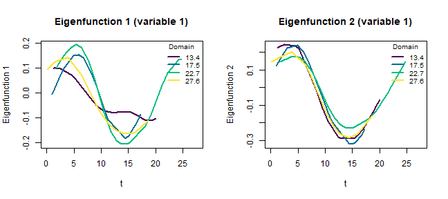
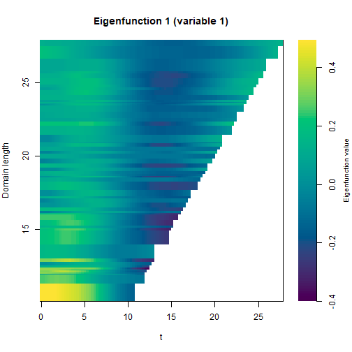
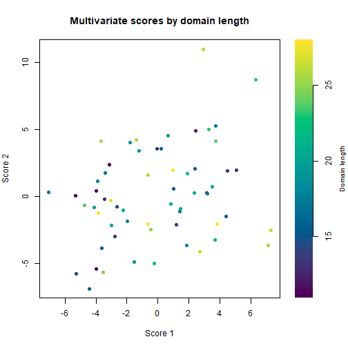

Multivariate functional principal component analysis for variable domain data
VDPO-04-vd-mfpca.RmdIntroduction
Variable domain functional data arise when each subject is observed over a domain of its own length. A clinical monitoring study is a typical example: each patient is followed for a different number of days, so the curves share a common starting point but end at different times. When several such processes are recorded for the same subjects (for instance oxygen saturation and body temperature), they should be analyzed jointly, because the modes of variation of one process are often related to those of the others.
The mfpca_vd function performs a multivariate functional
principal component analysis (MFPCA) for this setting. It proceeds in
two stages. First, each variable is decomposed through a variable domain
functional principal component analysis, which produces eigenfunctions
and scores that depend on the domain length. Second, the univariate
scores of all variables are combined into a single multivariate
decomposition whose components also vary with the domain. The method is
described in Hernandez-Amaro et al. (2026).
This vignette shows how to prepare the data, run the analysis and
inspect the results with the plot method.
Data generation
The input is a list with one matrix per functional variable. Each
matrix has subjects in rows and observation points in columns, and is
left-aligned: the recorded values occupy the first columns of each row,
and the rest is filled with NA. A second list of matrices,
with the same shape, holds the actual observation time of every
measurement.
We simulate two variables observed on variable domains. For each subject we draw a random number of observations and a random domain length, and build a smooth curve plus a small amount of noise.
set.seed(1)
N <- 60
maxcols <- 28
make_variable <- function(seed_shift) {
set.seed(100 + seed_shift)
Data <- matrix(NA_real_, N, maxcols)
Times <- matrix(NA_real_, N, maxcols)
for (i in seq_len(N)) {
ni <- sample(12:maxcols, 1)
tt <- sort(runif(ni, 0, ni))
Data[i, seq_len(ni)] <- rnorm(1) * sin(tt / 3) + rnorm(1) * cos(tt / 5) +
rnorm(ni, 0, 0.1)
Times[i, seq_len(ni)] <- tt
}
list(Data = Data, Times = Times)
}
v1 <- make_variable(1)
v2 <- make_variable(2)It is convenient to order the subjects from the shortest to the longest domain, so that the data matrices are easier to read and the results are easier to interpret. We compute the domain of each subject as the largest observed time across the two variables and reorder the rows accordingly.
domain <- pmax(apply(v1$Times, 1, max, na.rm = TRUE),
apply(v2$Times, 1, max, na.rm = TRUE))
ord <- order(domain)
Data <- list(v1$Data[ord, ], v2$Data[ord, ])
Times <- list(v1$Times[ord, ], v2$Times[ord, ])After reordering, the first rows correspond to the subjects with the shortest follow-up and the last rows to those with the longest, while every row remains left-aligned.
Specifying the observation times
The observation times can be supplied in two mutually exclusive ways:
- through
Times, as above, when the measurements are taken at arbitrary (possibly irregular) times; the domain of each subject is then taken as its largest observed time; - through
M_grid, a vector of lengthNwith the domain length of each subject, when the measurements are equidistant; in that case the grid of subjectiisseq(0, M_grid[i], by = 1 / Hz), whereHzis the sampling rate.
Only one of the two should be provided. In this vignette we use
Times.
Estimation
The analysis is run with mfpca_vd. The main arguments
are the number of multivariate components to keep (m_npcs),
the number of univariate components retained per variable
(u_npcs), the dimension of the basis used to smooth the
score covariances along the domain (k_m), and the smoother
(model_type, either "gam" or
"sop").
res <- mfpca_vd(
Data = Data,
Times = Times,
m_npcs = 3, u_npcs = 4, k_m = 8
)The result is a list. The most relevant elements are
scores_m and efunctions_m (the multivariate
scores and eigenfunctions), scores_u and
efunctions_u (their univariate counterparts),
evalues_u and evalues_m (the eigenvalues),
var_u (the cumulative variance explained by the univariate
components), mean_model (the fitted mean of each variable)
and M_grid (the domains used).
str(res, max.level = 1)
#> List of 10
#> $ scores_m : num [1:60, 1:3] -5.32 2.41 4.5 -4 1.01 ...
#> $ efunctions_m:List of 60
#> $ efunctions_u:List of 2
#> $ scores_u : num [1:60, 1:8] -5.07 4.02 -3.25 -6.35 1.1 ...
#> $ evalues_u :List of 2
#> $ evalues_m :List of 60
#> $ var_u :List of 2
#> $ mean_model :List of 2
#> $ M_grid : num [1:60] 11 12.5 13.7 11.2 15.5 ...
#> $ argvals_u :List of 2
#> - attr(*, "class")= chr "mfpca_vd"Eigenfunctions
Because the domain changes across subjects, the eigenfunctions are
not single curves but families of curves indexed by the domain length. A
convenient way to look at them is to draw a given component at a few
fixed domains, superimposed as lines. The plot method does
this for the chosen variable and components; the sign of each curve is
aligned so that they overlay consistently.
plot(res, type = "eigenfunctions", variable = 1, components = 1:2)
Each line is the eigenfunction evaluated on the domain of a subject, so longer domains produce longer curves. Comparing the curves shows how the shape of the mode of variation changes as the follow-up gets longer.
The full picture across all domains is shown as a heatmap, with time on the horizontal axis and the domain length on the vertical axis (ordered from shortest at the bottom to longest at the top). The color encodes the value of the eigenfunction, and the triangular shape reflects that each domain only reaches its own length.
plot(res, type = "heatmap", variable = 1, components = 1)
Scores
The multivariate scores summarize each subject in a small number of values. They can be displayed colored by domain length, which is useful to check whether the scores are associated with the follow-up length or capture other features of the data.
plot(res, type = "scores", components = 1:2)
A different functional variable is shown by changing the
variable argument, and further components with the
components argument.
References
Hernandez-Amaro et al. (2026). Variable Domain Multivariate Functional Principal Component Analysis. doi:10.48550/arXiv.2605.03633.